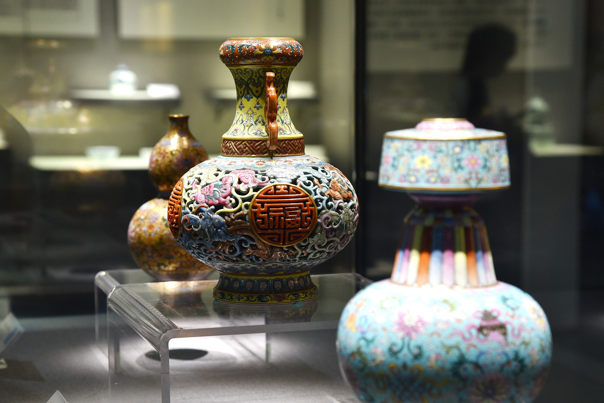
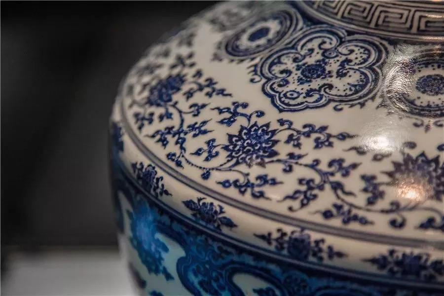

<!DOCTYPE html>

<head>
    <meta charset="UTF-8" />
    <title>JavaScript 写出到文档</title>
    <script>
        window.addEventListener("load", (event) => {
            document.open();
            document.write("<h2>中国瓷文化</h2><p>中华民族发展史中的一个重要组成部分是陶瓷发展史。<br />中国人在科学技术上的成果以及对美的追求与塑造，在许多方面都是通过陶瓷制作来体现的，并形成各时代非常典型的技术与艺术特征。</p>");
            document.write("<h2>宝丰汝窑</h2><p>汝瓷造型古朴大方，以名贵玛瑙为釉，色泽独特，有“玛瑙为釉古相传”的赞誉。</p>");
            document.write("<h2>青花瓷</h2><p>青花瓷，又称白地青花瓷，常简称青花，是中国瓷器的主流品种之一，属釉下彩瓷。<br />原始青花瓷于唐宋已见端倪，成熟的青花瓷则出现在元代景德镇的湖田窑。明代青花成为瓷器的主流。明宣德时发展到了顶峰。</p>");
            document.write("<h2>景德镇陶瓷博物馆</h2><p>景德镇陶瓷馆收藏陈列着自新石器时代以来，景德镇各个不同历史时期生产的名品佳作20000件左右，其中国家珍贵文物500余件。</p>");
            document.close();
        });
    </script>
</head>

<body>
</body>